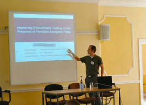
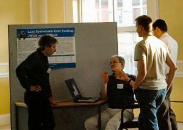
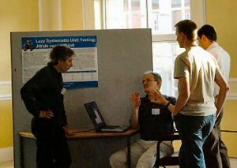
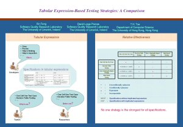
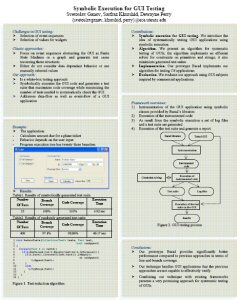
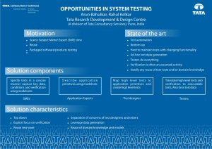
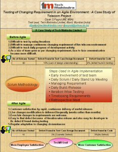
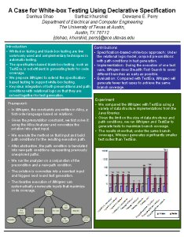

Presentations



In programme order:
-
Keynote: Trends and Techniques in Unit Testing: From Daikon to Agitator and Beyond
Marat Boshernitsan (Agitar Software Laboratories) -
Kiasan/KUnit: Automatic Test Case Generation and Analysis Feedback for Open Object-oriented Systems
John Hatcliff (Kansas State University) -
Abstracting Symbolic Execution with String Analysis
Daryl Shannon (University of Texas at Austin) -
Improving Evolutionary Testing in the Presence of Function-Assigned Flags
Stefan Wappler (Technical University of Berlin / DaimlerChrysler) -
Testing techniques - are they of any practical use?
Stephen Allot (Electromind) -
Development of Methods and Tools for ERP Implementations
Paul Gerrard (Gerrard Consulting) -
Early UML Model Testing using TTCN-3 and the UML Testing Profile
Paul Baker (Motorola) -
State-based Testing is Functional Testing!
Florentin Ipate (University of Pitesti) -
Test Effort Estimation Models Based on Test Specifications
Eduardo Aranha (University of Pernambuco and Motorola) -
On Test Data Generation of Object-Oriented Software
Andrea Arcuri (University of Birmingham) -
Automatic Test-Data Generation: An Immunological Approach
Konstantinos Liaskos (University of Strathclyde) -
How good are your testers? An assessment of testing ability
Liang Huang (University of Sheffield) -
On the Accuracy of Spectrum-based Fault Localization
Rui Abreu (Delft University of Technology) -
Software Fault Prediction using Language Processing
David Binkley (Loyola College) -
Keynote: Where do Bugs Come From?
Andreas Zeller (Saarland University) -
Modelling Dynamic Memory Management in Constraint-Based Testing
Florence Charreteur (IRISA/Univ. de Rennes) -
Exploiting Constraint Solving History to Construct Interaction Test Suites
Myra Cohen (University of Nebraska-Lincoln)
Posters
- Tabular Expression-Based Testing Strategies: A Comparison
Xin Feng (University of Limerick)

- Symbolic Execution for GUI Testing
Svetoslav Ganov (The University of Texas at Austin)

- Opportunities in System Testing
Rahul Kelkar (Tata Consultancy Services)

- Testing of Changing Requirement in an Agile Environment: A Case Study of a Telecom Project
Dipak Pagrut (Tech Mahindra Ltd, India)

- A Case for White-box Testing Using Declarative Specification
Danhua Shao (The University of Texas at Austin)

- Lazy Systematic Unit Testing: JWalk versus JUnit
Anthony Simons (University of Sheffield)
{kind=link}